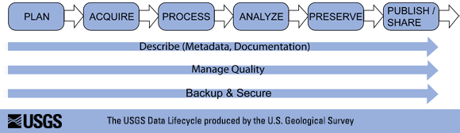

class: center, middle <center> <h2> Cleaning Data, Regular Expressions, Reading Data </h2> </center> <div style="padding-bottom: 70px"> <div style="float: left; valign: top; padding-left: 80px;"> Matt Espe <br/> DSI & Plant Sciences <br/> Postdoc<br/> </div> <div style="float: right; valign: top; padding-right: 30px; padding-bottom: 20px;"> Duncan Temple Lang <br/> Director, Data Science Initiative<br/> Professor, Statistics <br/> </div> </div> ### [https://github.com/dsidavis/data_cleaning_w_r](https://github.com/dsidavis/data_cleaning_w_r) <div style="clear: both"/> <!-- <hr width="50%"/> --> <img src="http://dsi.ucdavis.edu/images/dsi_banner.png" width="30%" height="30%"></img> --- layout: true <img style="float: right" src="http://dsi.ucdavis.edu/images/dsi_brand_logo.png"></img> --- # Goals + Process of cleaning data + Intersection: Regular Expressions + pattern matching and substitution in text + Reading non-tabular data into R. --- # Cleaning Data + Cleaning data requires judgment and decision making in the presence of ambiguity. + You need to ask the owner and collector(s) of the data to explain possible issues. + You should explicitly record your decisions and actions (for you and others) + You should return to review your decisions and see how they affect conclusion + Cleaning requires thought about how the data collection could lead to errors. + Often general problems, but always possible context-specific issues. + Cleaning should exist as part of the data life cycle, not separate from it. --- See [Barley.md](Barley.md) --- # The Data Lifecycle + Reproducability is essential. + Across sessions + Code + People Is this how we use data?  --- # Data Lifecycle (cont.) + In most cases, this is a cycle, not linear/sequential but highly iterative. E.g., + Data created + Cleaned/processed + "Used" in some way + Find issues! Go back to cleaning... + Add more data + Clean so more + Share with others + They find issues! Go back to cleaning... + Often, multiple people working on the data simulteneously in different stages/phases. + even you have multiple roles + writing code & fixing original file simultaneously + What if the original data is changed after it is cleaned? + What if the end or intermediate use is in Excel/GoogleSheets/OpenRefine, etc.? --- # Program defensively! Don't assume: + The data will never change + You will forever remember what you were doing in this moment + Your assumptions are correct (e.g., you might need to go back and correct a bad "fix") + You understand perfectly how errors occurred Aim to write software rather than scripts --- # Writing a script vs. software + script: fixes instances, (maybe) specialized to the data, assumes the data are static. Breaks if the data change, assumes a linear workflow. ``` > df[12, 3] = "Bob" ``` Why row 12? Why column 3? What if Dr. Smarty-pants inserts a new column in position 1? + software: flexible to fix conditions, not specific instances. Data can change without breaking script ``` > df$names[df$names == "bob"] = "Bob" ``` Invariant to order of rows/columns. If the data are already corrected, has no effect. But writing software is more effort (higher cost), requires more thought. --- # R Functions which use Regex + grep() and grepl() + Find which elements the pattern matches. + gregexpr()/regexpr() and regmatches() + Find where in each element the pattern matches + sub()/gsub() + Substitute text for pattern match. (Dynamic) + strsplit() + Split a vector of strings, each into multiple elements + adist() + Edit distance to see which strings are "close" + agrep() + Fuzzy/approximate matching of a pattern + Others from stringr and stringi packages. + e.g. str_extract() + All Vectorized functions. ## Shell Commands + grep, egrep, ag + find + Regular expressions versus Shell globbing! --- # Regex Elements + Literals + Wildcard Character `.` + Escaping characters + Character Classes + Negated Character Classes + Positional Matching - Anchors (`^` and `$`) + Alternation + Case Insensitive matching + Word boundaries + Quantifiers + Grouping and Back-References () --- # Regex Extensions + Non-greedy Matching + Problems with greedy matching. + Common simple case, simple solution + Anything except this character + or any of these characters + *? + Positive Lookahead and Behind + Negative Lookahead and Behind --- ## Literals Matches to the literal characters. ``` > strings = c("My dog is cool.", "My cat is cooler.") > grep("dog", strings) [1] 1 ``` ``` grep("cool", strings) ``` Matches both. ``` grep("cooler", strings) ``` Matches just one. --- ## Wildcard Character `.` Matches **any** character. ``` > strings = c("cat", "hat", "bat", "4at", "Manhattan") > grep(".at", strings) [1] 1 2 3 4 5 ``` Can be extremely useful, or create havoc. Use caution. --- ## Escaping Characters + So how do we find a . if it is treated as any character? + Common mistake: intend to match "." without escaping: ``` strings = c("www.google.com","wwwhat?!?") grep("www.", strings) [1] 1 2 grep("www\\.", strings) [1] 1 ``` --- ## Character Classes Matches any character in a set of specified characters inside of `[]`. ``` > strings = c("cat", "hat", "bat", "4at", "Manhattan") > grep("[bc]at", strings) [1] 1 3 ``` Shorthand for classes of characters, include: + numbers: `[0-9]` or `[[:digit:]]` + letters: `[A-z]` (all), `[A-Z]` (uppercase), `[a-z]` (lowercase), `[[:alpha:]]` + alphanumeric: `[[:alnum:]]` + space characters: `[[:space:]]`, e.g. tab `\t` or space `\s` + punctuation: `[[:punct:]]` --- ## Character Classes (examples) + Any alphabetic ``` > strings = c("Abc", "abc", "123", "Abc123") > grep("[A-z]", strings) [1] 1 2 4 ``` + Any lower-case alphabetic ``` > grep("[a-z]", strings) [1] 1 2 4 ``` + Any digit ``` > grep("[0-9]", strings) [1] 3 4 ``` + Any alphanumeric ``` > grep("[A-z0-9]", strings) [1] 1 2 3 4 ``` --- ## Character Classes (examples, cont.) You can specify a partial range inside the `[]` as well ``` strings = c("a", "z", "1", "9") ``` + Only match letters "a" through "g" ``` > grep("[a-g]", strings) [1] 1 ``` + only match numbers 0 through 5 ``` > grep("[0-5]", strings) [1] 4 ``` --- ## Negated Character Classes Uses `^` inside of `[]` to negate the match, i.e., match everything except those characters. ``` > strings = c("Abc", "abc", "123", "Abc123") ``` + Contains non-alphabetic ``` > grep("[^A-z]", strings) [1] 3 4 ``` + Contains non-lower case ``` > grep("[^a-z]", strings) [1] 1 3 4 ``` + Contains any non-digit ``` > grep("[^0-9]", strings) [1] 3 4 ``` --- ## Positional Matching - Anchors `^` `$` Matches the beginning (`^`) or end (`$`) of the string. Used outside of `[]` ``` > strings = c("cat", "bat", "check", "China") > grep("^c", strings) #First character is "c" [1] 1 3 > grep("t$", strings) # Last character is "t" [1] 1 2 ``` --- ## Alternation Matches multiple patterns by using the `|` (called the "pipe", shift + key above "Enter" key on US keyboards) ``` > strings = c("cat", "bat", "check", "China") > grep("hat|coat", strings) [1] 3 4 ``` --- ## Case Insensitive matching Most regex functions have an option to `ignore.case` ``` > strings = c("Cat", "cat", "CAT", "bat", "Hat") > grep("cat", strings, ignore.case = TRUE) [1] 1 2 3 ``` --- ## Word boundaries Useful when looking for a word that occurs as a pattern inside other words. Specified with: + either beginning or end of word: `\\b` + beginning of word: `\\<` + end of word: `\\>` ``` > strings = c("This", "is", "Mississippi") > grep("is", strings) [1] 1 2 3 > grep("is\\>", strings) [1] 1 2 > grep("\\bis\\b", strings) [1] 2 ``` --- ## Quantifiers + Optional pattern: `?` character can occur 0 or 1 times ``` > strings = c("abc", "ac", "abbc") > grep("ab?c", strings) [1] 1 2 ``` + Zero or more * ``` > grep("ab*c", strings) [1] 1 2 3 ``` + One or more \+ ``` > grep("ab+c", strings) [1] 1 3 ``` --- ## Quantifiers (cont.) + m or more `{m,}` ``` > grep("ab{2,}c", strings) [1] 3 ``` + n or fewer `{,n}` ``` > grep("ab{2,}c", strings) [1] 1 2 3 ``` + between m and n `{m,n}` ``` > grep("ab{1,2}c", strings) [1] 1 3 ``` --- ## Grouping and Back-References () + `()` and `\\1`, `\\2`, etc. Allows you to refer to part of a match by enclosing it in `()`. `\\1` refers to the first match captured, `\\2` the second, and so on... Really useful in `gsub()` to "grab" pieces out of a string: ``` > strings = c("I want this 5 and this 9 separated by a '-'.") > gsub(".*([0-9]).*([0-9]).*", "\\1 - \\2", strings) [1] "5 - 9" ``` --- # All Special Characters Special characters include + ( and ) + [ and ] + . + ^ $ + \ + * ? + { } + | ``` > strings = c("This is a period: '.' ", "There is no period here") > grep(".", strings) [1] 1 2 > grep("\\.", strings) [1] 1 ``` --- ## Extensions + Like all languages, there are useful extensions, dialects + By default, R uses POSIX extended regular expressions + perl = FALSE + Can use richer PCRE - Perl Compatible Regular Expressions + perl = TRUE + Available in Perl, Python (but different), C++, etc. + Check documentation and with example code. --- ### Non-greedy Matching + Problems with greedy matching. + Common simple case, simple solution + Anything except this character + or any of these characters + `*?` --- ### Positive Lookahead and Behind + `(?= )` `(?<= )` --- ### Negative Lookahead and Behind + `(?! )` `(?<! )` --- ### Groups for backreferencs + Non-capture of groups + Named groups --- # Reading Data Examples using regular expressions + [NASA Weather Data][nasa.html] + [Mannheim][mannheim.html]